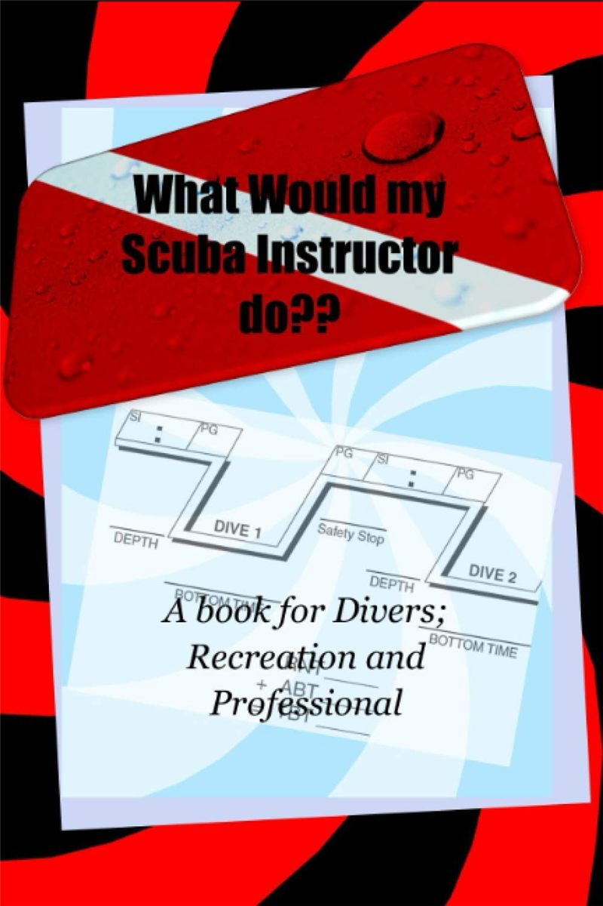

Available Now
Get Your Copy
What Would My Scuba Instructor Do? is available in ebook, audiobook, and paperback formats.
Whether you are a new diver, a dive professional, or someone curious about the scuba industry, this book shares stories and lessons from real dive-shop experience.
About the Book
A look inside dive-shop life
Ever wondered what it takes to work in a dive shop or become a scuba professional? This book blends dive stories, humor, real-world lessons, and industry insight.
It is written from the perspective of someone who has lived the scuba lifestyle, worked around students, divers, instructors, and dive operations, and experienced the strange, funny, difficult, and rewarding parts of the industry.
The next chapter
A second book in the WWMSID series
Planned for 2027
The second book in the WWMSID series is planned for release in 2027. More details will be shared when available.